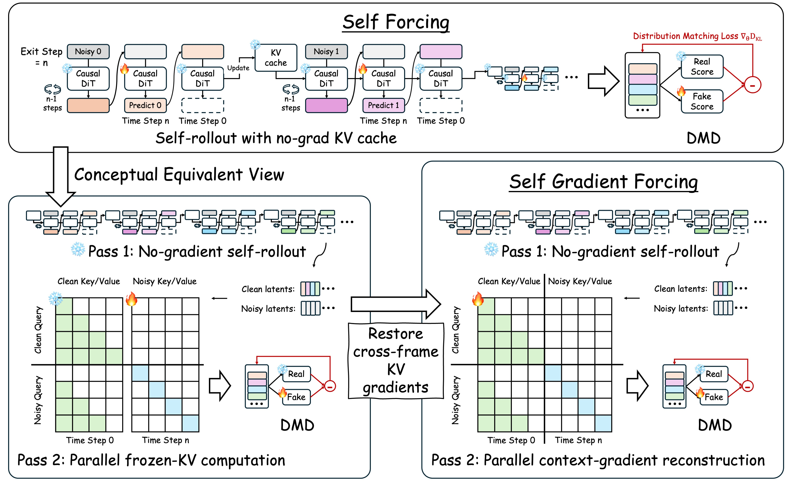
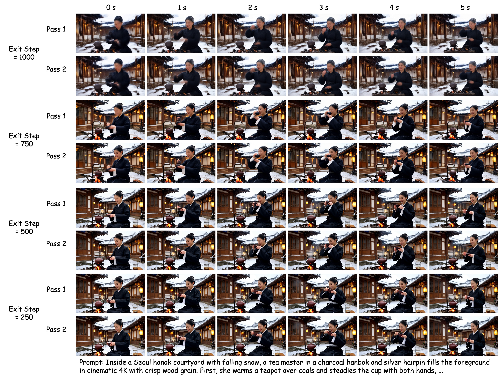

Self Forcing trains on self-generated histories but treats historical K/V entries as detached cache state. SGF keeps the no-gradient rollout unchanged and adds a parallel reconstruction pass, where detached context latents are re-encoded at the clean context timestep so future DMD losses supervise K/V writing without serial rollout backpropagation.

Four-way comparison per sample — SGF (Ours), Self Forcing (SF), SF + Bi-directional ODE, SF + Causal ODE. All four tiles play in lock-step; use the controls on the SGF (Ours) tile to play, pause, or scrub. Pick a duration, then switch the AR / CD initialization.
Two-way lock-step comparison per sample: SGF (Ours) vs Self Forcing. The SGF (Ours) tile carries the video controls; the Self Forcing tile follows it in play, pause, and scrub. Pick a duration, then switch the AR / CD / ODE initialization.
Direct differentiable-cache training keeps the serial cache-formation graph and runs out of memory. SGF uses bounded parallel context-gradient reconstruction at the sampled exit step, restoring context K/V gradients with modest peak-memory and runtime overhead.
| Training variant | Peak memory | Stable memory | Time / 5 steps | Outcome |
|---|---|---|---|---|
| Self Forcing, frozen historical K/V cache | 79.01GB | 79.01GB | 10.39s | trains |
| SGF, serial Pass 1 + parallel Pass 2 | 87.01GB | 63.73GB | 11.71s | trains |
| Self Forcing, differentiable historical K/V cache | OOM | OOM | -- | OOM |
SGF relies on Pass 2 faithfully replaying the sampled exit computation from Pass 1. Figure 2 and Table 2 are the same recovery diagnostic: the decoded pairs are visually nearly indistinguishable, while the latent metrics show low relative L2 error and near-unity cosine similarity across exit steps.

Metrics are averaged over 24 prompts for each exit step. Overall averages are computed over all 96 prompt/exit comparisons. We also report the relative L2 error normalized by the bf16 relative precision εbf16 = 2-7.
| Exit step | # comparisons | MSE | RMSE | Mean abs. | Max abs. | Rel. L2 | Rel. L2 / εbf16 | Cosine |
|---|---|---|---|---|---|---|---|---|
| 1000 | 24 | 3.123e-4 | 0.01745 | 0.01093 | 0.58396 | 0.02133 | 2.73 | 0.999766 |
| 750 | 24 | 2.148e-4 | 0.01449 | 0.00884 | 0.58189 | 0.01566 | 2.00 | 0.999874 |
| 500 | 24 | 1.141e-4 | 0.01064 | 0.00693 | 0.49110 | 0.01125 | 1.44 | 0.999936 |
| 250 | 24 | 6.041e-5 | 0.00774 | 0.00535 | 0.29028 | 0.00812 | 1.04 | 0.999967 |
| Overall | 96 | 1.754e-4 | 0.01258 | 0.00801 | 0.48681 | 0.01409 | 1.80 | 0.999886 |
@article{zhuang2026sgf,
title = {Self Gradient Forcing: Native Long Video Extrapolation},
author = {Zhuang, Junhao and Zhang, Shiyi and Bian, Yuxuan and Li, Yaowei
and Luo, Yawen and Jin, Weiyang and Zhang, Songchun and He, Xianglong
and Zhang, Xuying and Li, Haoran and Huang, Haoyang and Xue, Zeyue
and Duan, Nan},
journal = {arXiv preprint},
year = {2026}
}